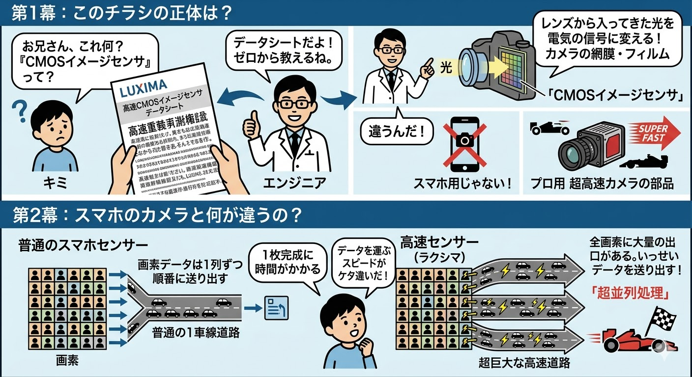
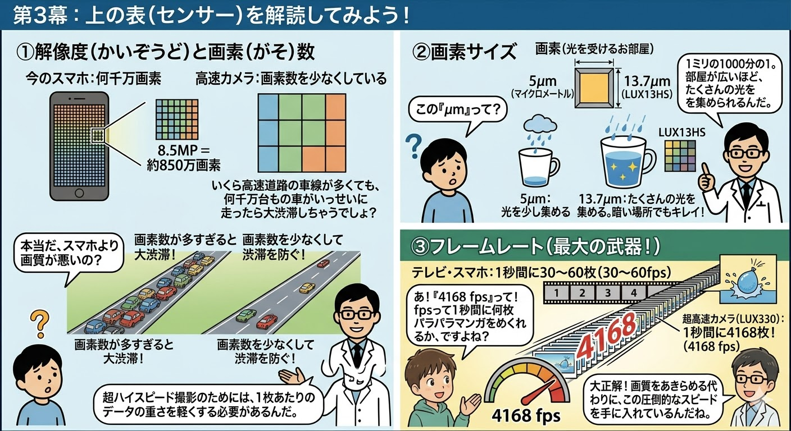
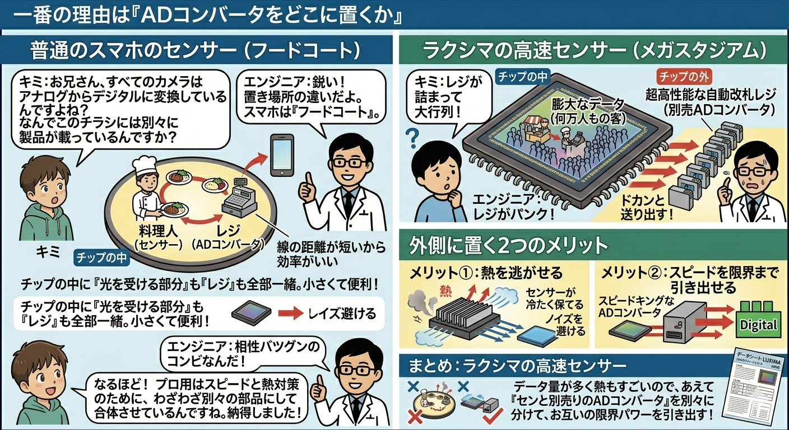
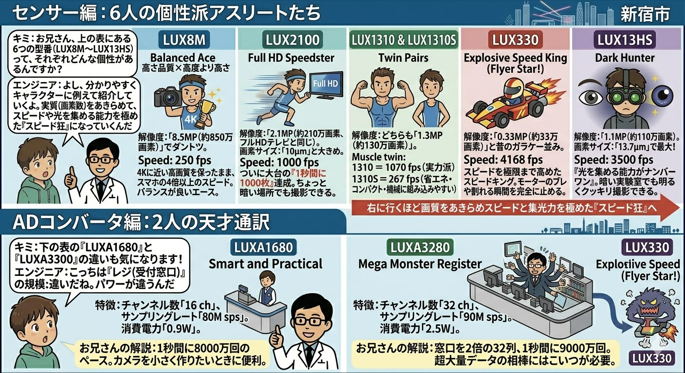
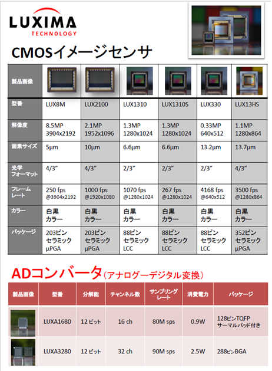
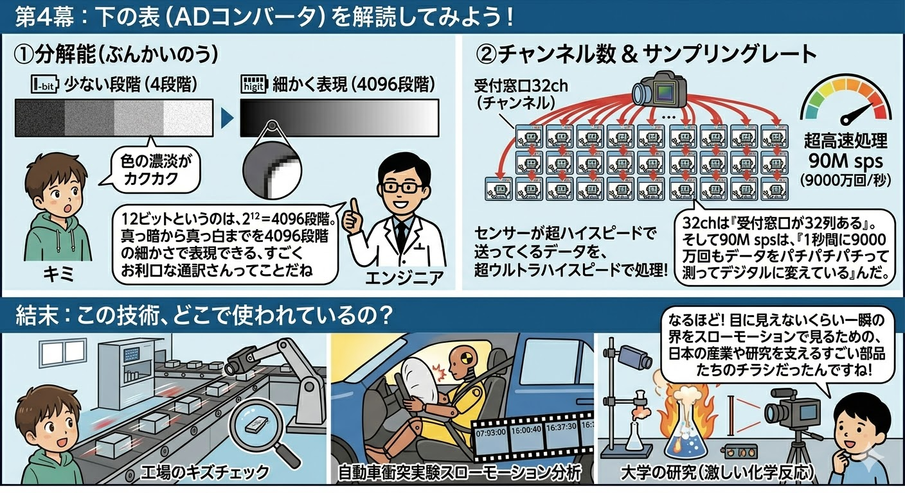
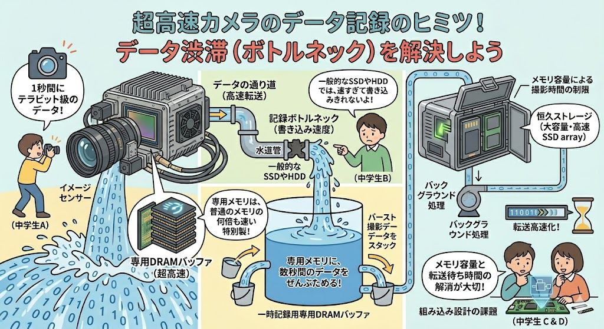

【背景】スマホのカメラと高速センサーの根本的な構造差
👦
キミ
お兄さん、これ何？『CMOSイメージセンサ』って？
👨💻
エンジニア
データシートだよ！ゼロから教えるね。レンズから入ってきた光を電気の信号に変える、カメラの網膜・フィルムのようなものなんだ。でも、スマホ用じゃない。プロ用超高速カメラの部品んだ。
👦
キミ
スマホのカメラとは何が違うんですか？
👨💻
エンジニア
普通のスマホセンサーは、画素データを1列ずつ順番に送り出すから、1枚完成するのに時間がかかるんだ（普通の1車線道路）。対して、高速センサー（ラクシマ）は、全画素に大量の出口があって、いっせいデータを送り出す。これが「超並列処理」（超巨大な高速道路）なんだよ。
技術原理：データ転送帯域の課題
一般的なイメージセンサはシリアル転送に近い走査方式を採用しますが、数千fpsを超える高速撮影では、配線の物理的限界（寄生容量やクロック同期制限）により、シングルチャネルでの転送は不可能です。
超高速センサにおいては、数画素～数十画素ごとに完全に独立した出力パス（超巨大な高速道路構造）をマトリクス状に配置し、並列で同時出力を行う「マルチチャネル・パラレル読み出し構造」が必須となります。

【物理的限界】解像度・画素サイズ・フレームレートのトレードオフ
👦
キミ
本当だ、でもスマホより高速カメラの方が画素数が少ないのはなぜ？画質が悪いの？
👨💻
エンジニア
画素数が多すぎると、大渋滞が起きちゃうんだ。いくら高速道路の車線が多くても、何千万台もの車がいっせいに走ったら動けなくなるでしょ？だから画素数を少なくして渋滞を防ぐんだ。超ハイスピード撮影のためには、1枚あたりのデータの重さを軽くする必要があるんだよ。
👦
キミ
なるほど。じゃあこの「μm（マイクロメートル）」って何ですか？
👨💻
エンジニア
画素サイズ、つまり「光を受けるお部屋」の広さだよ。1ミリの1000分の1の単位。部屋が広い（画素サイズが大きい）ほど、短時間でたくさんの光を集められるんだ。5μmだと少しだけど、13.7μm（LUX13HS）ならたくさんの光を集められる。だから暗い場所でもキレイに撮れるんだ。
数理ロジック：スループット限界と集光能力
センサが出力可能な最大総データレート（スループット）は以下の物理方程式に支配されます。
データレート = 画素数 × フレームレート × 階調ビット数
系の限界転送速度が一定である以上、フレームレート（fps）を極限まで高めるには画素数（解像度）を削減せざるを得ません。また、シャッタースピードがμsオーダーに達するため、1画素あたりの受光面積（画素サイズ）を拡大し、量子効率を補う必要があります。

【技術原理】ADコンバータの本質と配置問題（フードコート vs メガスタジアム）
👦
キミ
お兄さん、すべてのカメラはアナログからデジタルに変えている（AD変換している）んですよね？ なんでこのチラシには別々に製品が載っているんですか？
👨💻
エンジニア
鋭い！「置き場所の違い」だよ。確かにすべてAD変換しているけれど、スマホは『フードコート』んだ。チップの中に『光を受ける部分（料理人）』も『レジ（ADコンバータ）』も全部一緒に入っている。線の距離が短いから効率が良くて小さくて便利んだ。
👦
キミ
ラクシマの高速センサーはどう違うの？
👨💻
エンジニア
高速センサーは数万人もの客が押し寄せる『メガスタジアム』だ。チップの中にレジ（ADコンバータ）を置くと、処理が詰まってレジがパンクしちゃう！だから、チップの外側に「超高性能な自動改札レジ（別売ADコンバータ）」を並べて、膨大なデータをドカンと送り出すんだよ。
構造的アプローチ：外側に置く2つのメリット
メリット①：熱を逃がせる
AD変換回路は高周波動作を行うため、消費電力および発熱量が非常に大きくなります。これをセンサ素子と同一ダイ（オンチップ）に集積すると熱が籠もり、センサの暗電流ノイズ（熱ノイズ）を劇的に増大させます。外部に分離することでセンサを低温に保ち、ノイズを回避します。
メリット②：スピードを限界まで引き出せる
外部に独立した専用の高速ADコンバータ（スピードキング）を配置することで、チップサイズ制限から解放され、並列チャネル数およびサンプリングレートを物理的限界まで高めることが可能になります。

【製品仕様】6人の個性派アスリートと2人の天才通訳
👦
キミ
型番ごとの個性や、ADコンバータの「通訳」としてのパワーの違いも知りたいです！
👨💻
エンジニア
よし、各特性をデータシートの数値ベースで一覧表にして分かりやすく紹介するね。
■ イメージセンサー群の特徴
■ ADコンバータ群の特徴
分解能・サンプリングの物理解説
外部ADコンバータは、高速センサから超並列で出力されるアナログ電圧を、高ビット（例：12ビット＝4096段階）のきめ細かさでデジタルに変換（通訳）します。チャンネル数（ch）はパラレル処理の受付窓口数、サンプリングレート（sps）は1秒あたりの測定回数を示します。
LUX330のような「スピード狂」のセンサが叩き出す膨大なデータを破綻なくデジタル化するには、LUXA3280のような多チャネル・高spsの外部コンポーネントが論理的に不可欠となります。
▼ 概念イメージ図

▼ 製品仕様一覧データシート（クリックで拡大可能）

【産業的インパクト】この技術が社会を支える現場
👦
キミ
なるほど！目に見えないくらい一瞬の世界をスローモーションで見るための、日本の産業や研究を支えるすごい部品たちだったんですね！
👨💻
エンジニア
その通り。例えば、以下のような過酷かつ超高速な環境で、この「センサと別売りADコンバータ」のコンビネーションが極限のパワーを発揮しているんだ。
- 工場のキズチェック： 高速で移動する製品ラインの微細な欠陥を、遅延やブレなく正確に検知。
- 自動車衝突実験スローモーション分析： ミリ秒単位で発生するエアバッグの展開や車体の変形挙動を完全にホールド。
- 大学の研究（激しい化学反応）： 爆発や超高速な結晶構造変化など、極短時間の物理・化学現象の可視化。
結論：コンポーネント分離による最適最適化
超高速撮影において、「イメージセンサ（光電変換素子）」と「ADコンバータ（量子化回路）」を物理的に分離・独立させる設計思想は、熱力学（発熱・ノイズ）と電気工学（帯域・スループット）のトレードオフを克服するための最も合理的なソリューションです。

第4章：最大の弱点？「撮ったデータの保存」はどうするの？
👧
アカリ（中学生）
うん、めちゃくちゃよく分かった！お兄さん、ありがとう！……あ、でもさ、これだけすごい超高速センサーとバケモノADコンバータが合体して、1秒間に4000枚も写真が撮れるのは分かったんだけど……
👨💻
サトウ（開発エンジニア）
うんうん、どうしたの？
👧
アカリ（中学生）
カメラのシャッターを押したその一瞬だけで、ノートパソコンのハードディスク、一発でパンパンになってデータ書き込み追いつかなくない？ 撮った動画、どこにどうやって保存するの？
👨💻
サトウ（開発エンジニア）
……。
サトウ（エンジニアの心の声）：
（あ……。一番突っ込まれたくない『超高速カメラは、撮影ボタンを押した瞬間に数秒でメモリがいっぱいになって、そのあとの保存にめちゃくちゃ時間がかかる』っていう、システム全体の最大の弱点（ボトルネック）を一瞬で見抜かれた……！）
（あ……。一番突っ込まれたくない『超高速カメラは、撮影ボタンを押した瞬間に数秒でメモリがいっぱいになって、そのあとの保存にめちゃくちゃ時間がかかる』っていう、システム全体の最大の弱点（ボトルネック）を一瞬で見抜かれた……！）
👧
アカリ（中学生）
お兄さん？急に黙ってどうしたの？
👨💻
サトウ（開発エンジニア）
……キミ、将来うちの会社にインターンシップ（就職体験）来ない？
技術原理の解説（高速データ転送と記録ボトルネック）
超高速・高解像度イメージングにおいて、センサーから毎秒出力されるテラビット級の生データ（Raw data）は、一般的なSSDやHDDの書き込み速度を遙かに超越します。
このため、システムはカメラ内部に大容量・超高速の「一時記録用専用DRAMバッファ」を搭載し、数秒間のバースト撮影データを一度すべてメモリにスタックします。その後、バックグラウンド処理で低速な恒久ストレージへとシーケンシャル転送するパイプライン設計が採用されていますが、この「メモリ容量による撮影時間の制限」と「転送待ち時間（ボトルネック）」の解消が組み込み設計における重要な課題となっています。

高速CMOSイメージセンサにおける「オンチップAD」と「外部配置AD」の選択は、単なるアーキテクチャの違いではなく、対象とする物理現象のスケールによって決定される工学的帰結です。熱源の完全分離とパラレルデータバスの確保により、はじめて4000fpsを超える極限の世界の可視化が担保されます。